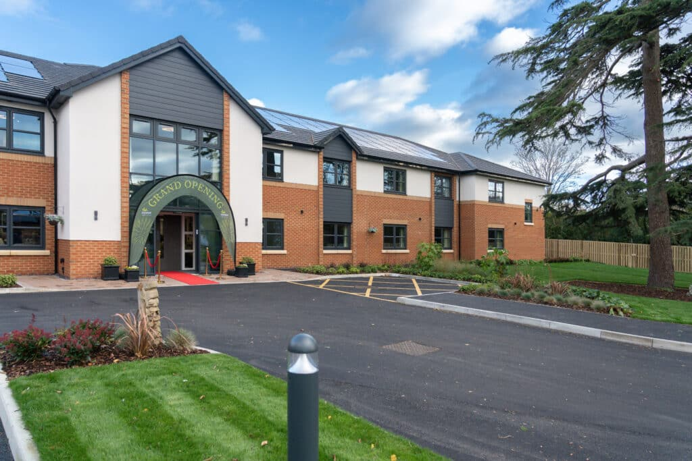

A · New build
Get the infrastructure right before the building opens.
Getting the network right during construction is significantly easier — and cheaper — than correcting fundamental design problems once a building is operational. We work alongside developers, main contractors, M&E consultants and architects from design stage to handover.
- 01Design, cabling & wireless specification
- 02Installation & commissioning
- 03Validation, documentation & handover